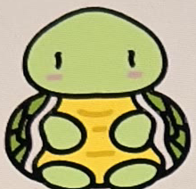

FIFO Smart Fridge
Try the inventory workflow, from adding groceries to scanning the shelf after the door closes.
Linear scan · Close-up
Today10/11

Rak3 day streak!
A good start!
✓✓
Best streak · 3Overview
Next up
Add a sample batch to update the inventory.
Pipeline stages
See the real system
- Technology
- Barcode reading, ultrasonic sensing, MQTT, Raspberry Pi, stepper-driven scanning, panoramic stitching, Detectron2, PaLI-Gemma, and an inventory database.
- My role
- Led a six-person USC Makers team and managed a $600 budget to build the smart fridge retrofit. Developed the removal pipeline using Detectron2 to locate containers and PaLI-Gemma to read labels and identify products. Integrated the stepper-driven scanner with the inventory database and tablet app, and debugged synchronization between the hardware and software.
- Project outcome
- A fridge prototype with a linear scanning mechanism and a tablet interface for inventory and the game overview.